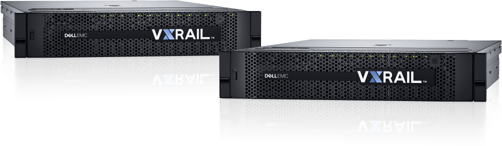

「簡單易用」 是我們給您的承諾
使用 VxRail 簡化端到端生命週期管理
VMware Hyper-Converged軟體可自動構建，配置並驗證您的VxRail設備，從而增加您的靈活性並加快Porduction的時間。您將能夠在15分鐘內從開機到完成VMware虛擬機叢集配置。這個過程是完全自動的。要實現這一點，在VMware部署中需要進行的200多個配置步驟 - 無論是在“獨立的一體機”還是自己DIY的vSAN 。另外，VxRail還會透過預先安裝的網絡自動驗證指導您下一步該如何進行，而且若要在環境中添加新設備時，這就像你開口說「我想在現有的叢集上再加一台」一樣簡單，因為這整個過程只需要5分鐘。這是Dell EMC對您的承諾。
V 系列 - VDI 最適化配置
針對VDI進行了優化的VxRail 一體機系列，我們提供您3種最佳的配置。

- CPU
- 2 x 10-Core (4114)
- RAM
- (12 X 16GB @ 2400MHz)
- Disk
- 4TB+ (Capacity*)
- GPU (Optional**)
- Up to 3 x FLDW
A1
- CPU
- 2 x 14-Core (5120)
- RAM
- 384GB (12 X 32GB @ 2400MHz)
- Disk
- 6TB+ (Capacity*)
- GPU (Optional**)
- Up to 3 x FLDW
A2
- CPU
- 2 x 20-Core (6138)
- RAM
- 768GB (24 X 16GB @ 2667MHz)
- Disk
- 8TB+ (Capacity*)
- GPU (Optional**)
- Up to 3 x FLDW
A3
業界領導的 Thin Clients - Dell Wyse
Dell 提供最廣泛的安全選項，易於管理的 thin 與 zero client
來配合您的預算、應用以及效能需求
多功能
專為客戶量身訂做的
Citrix、VMware、與Microsoft
多工OS支援
ThinOS
- ThinOS 防毒以及防惡意軟體功能最佳的 Thin client OS
- 低至於零的管理開銷
- 易於部署 & works out of the box
- 利用豐富的多媒體立即啟動
- 有限的週邊設備支援
- 無當地應用支援
- 支援 ARM 與 x86
Linux
- 支援 Lync & VXME 此類統一通訊平台
- 支援當地的Linux應用
- 優良的週邊設備支援
- 透過Wyse WDM & INI 檔案管理完成靈活的管理選項
- 以開源為根據
- 支援ARM與x86
Windows Embedded
- 支援 Lync此類統一通訊平台
- 支援當地的Windows應用
- 建全的週邊設備支援
- 透過WDM & WCM檔案管理完成靈活的管理選項
- 以Microsoft Windows OS為根據
- 僅支援 x86結構
易於管理/更為安全
更加靈活/周邊設備越多